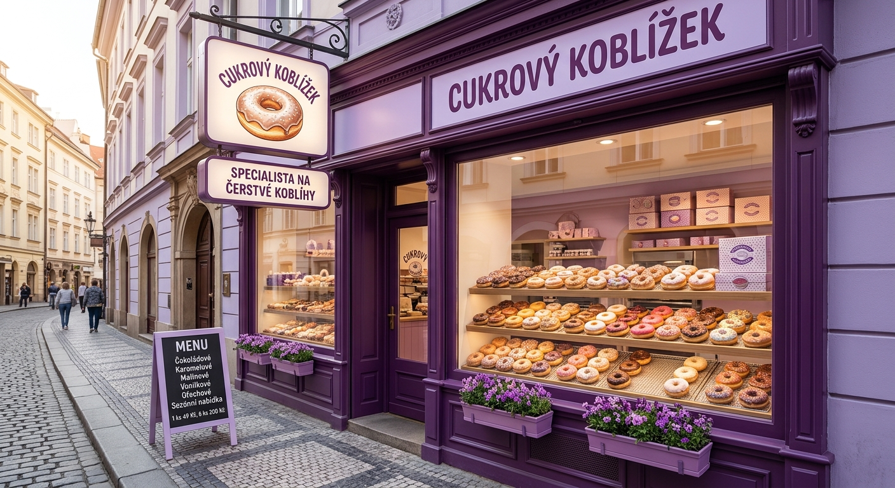

Vítejte v naší koblížkárně!
Každé ráno pro vás pečeme ty nejlepší, nadýchané domácí koblížky plné chuti. Zakládáme si na poctivých surovinách, bohatých náplních a křupavých posypkách, které si zamilujete na první kousnutí.
Naše historie
Všechno to začalo v roce 2020 velkou láskou k pečení a snem vyměnit nudnou kancelářskou rutinu za něco opravdu voňavého. Začali jsme v malé kuchyni experimentováním s tradičními recepturami a hledáním té správné, nadýchané konzistence těsta.
Díky skvělé zpětné vazbě od prvních zákazníků jsme se po roce odvážili otevřít naši první kamennou prodejnu. Dnes pro vás denně pečeme stovky čerstvých koblížků, neustále vymýšlíme nové příchutě a dělá nám radost, že se k nám rádi vracíte pro svou sladkou odměnu.